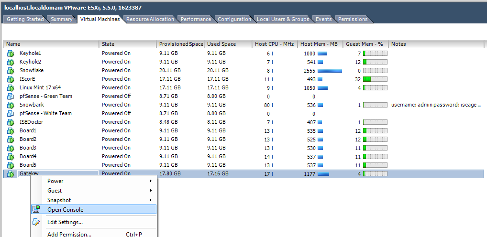
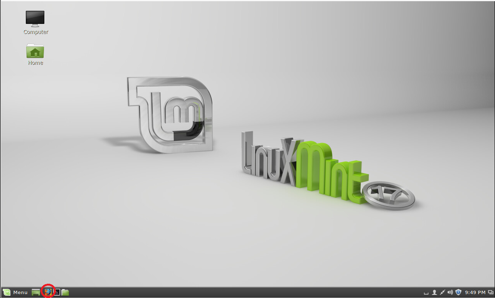
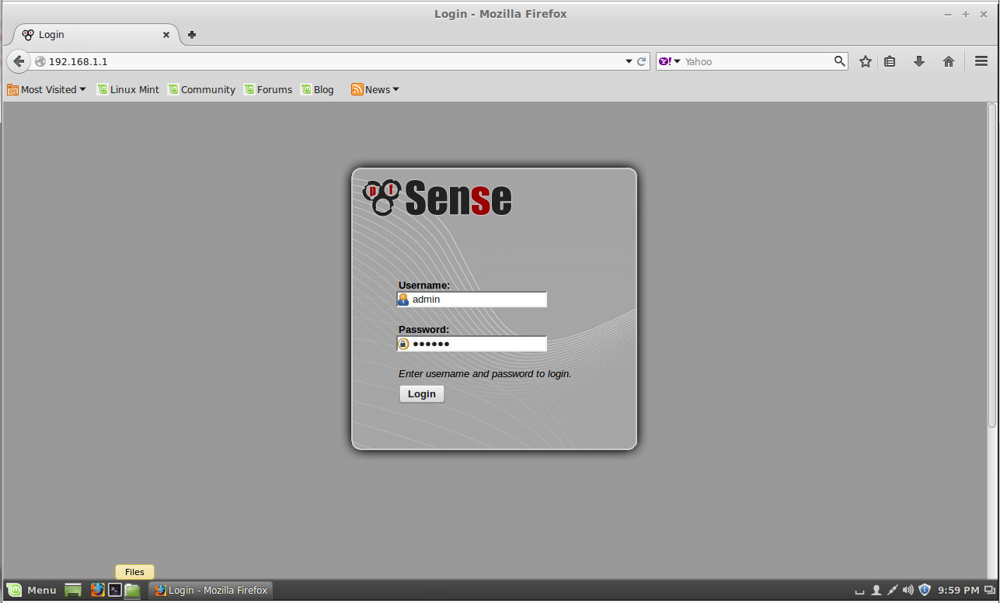
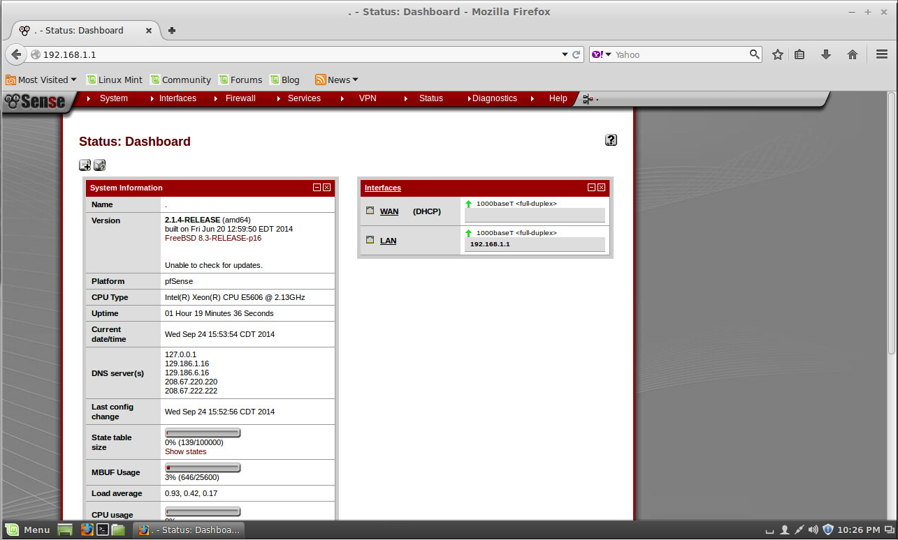

Configure Static IP on Snowbank
This section is optional and only required if a static IP address if required for ISEAGE. By default, ISEAGE is configured to automatically obtain an IP address on the External Network using DHCP.
Getting to Snowbank's Configuration Page
- The Snowbank virtual machine is running the pfSense firewall software which is configure through a locally hosted webpage. To access Snowbank's configuration webpage we will first start of the Gatekey Virtual Machine. First, go to the Virtual Machine tab in vSphere Client and right-click on Gatekey and go to Open Console.
- A new window should pull up that allows you to interact with the Gatekey Virtual Machine. Most likely the screensaver will be up. Click anywhere on the screen and the desktop should appear momentarily. Click on the Firefox logo in the lower left-hand side of the screen to start up Firefox.
- The homepage on Gatekey is set to the ISEAGE control webpage. Go to the IP address of Snowbank (192.168.1.1) to access Snowbank's configuration page. The username and password should be automatically filled in. If not the username is admin and the password is iseage.
- After logging into Snowbank you will be brought to Snowbanks main configuration screen which will look similar to Figure 4

Figure 1: Open Gatekey Console

Figure 2: Open Firefox

Figure 3: Log into Snowbank

Figure 4: Snowbank Main Configuration Screen